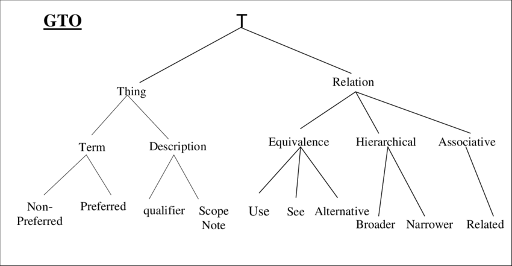
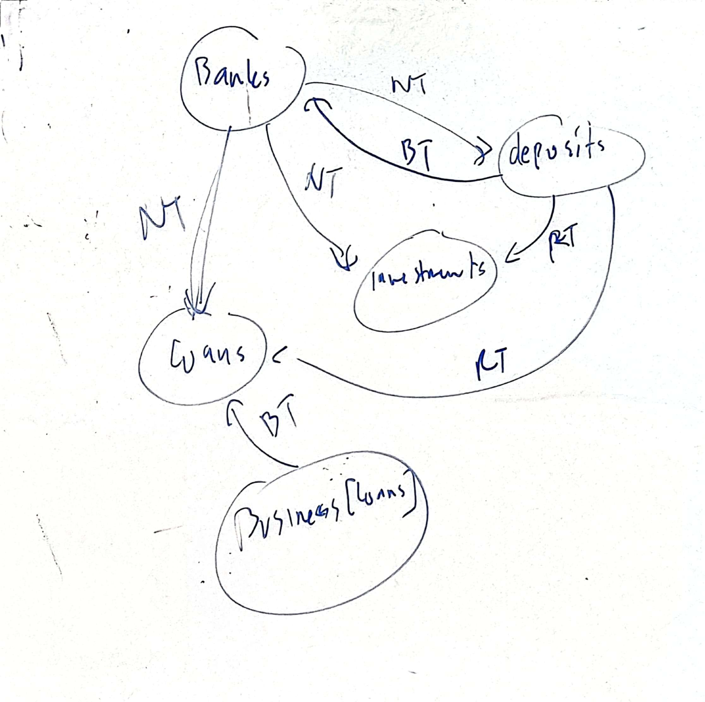
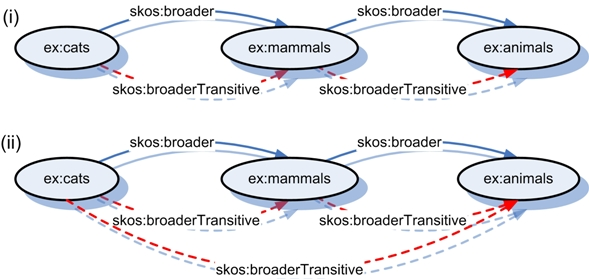
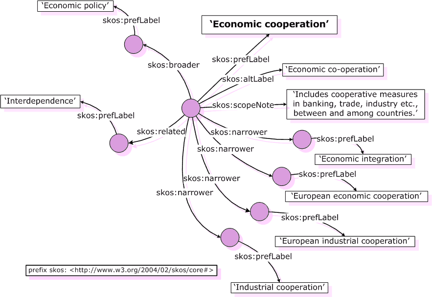

Terdapat 4 perspektif untuk ontology:
Filosofis
Studi yang memperlajari makna dari suatu benda, essence of being
Aristotle mengabstraksikan setiap benda itu menjadi 10 benda, (ibarat taksonomi)
Ontologi formal terdiri dari beberapa teori:
Untuk berkomunikasi butuh semacam suatu model yang dapat dimengerti atau diinterpretasi setiap pihak
Linguistic
Makna kata
Kamus: Mendaftarkan dan mengindeks semua kata
Tesaurus: Menghubungkan konsep dan sinonim, antonim, kesamaan
Misalnya pada Roget's Thesaurus ada hubungan abstrak, space, matter, intellect, volition dan affections
Istilah-istilah terminology
Konsep analisis makna kata
ISO standard
Konsep dan term punya beberapa tingkatan atau kelas:
Monosemy: Satu term - Konsepnya satu saja
Polysemy: Satu term, konsepnya banyak, misalnya kepala panah dan kepala manusia
Homonymy: Satu term, tapi konsepnya banyak namun tidak berelasi
Synonymy: Satu konsep, istilahnya banyak
Term punya definisi yang membatasi (delimiting) dan ada pula yang tidak membatasi
Ada istilah hyponymy yaitu konsep membagikan hubungan karakteristik umum
Ada istilah meronymy untuk hubungan partitive
Ilmu Komputer
Terdapat dua standar semantic web untuk merepresenasikan ontologi, selain rdfs:
Ontologi digunakan untuk menspesifikasikan konsep konsep semantik
Pada thesaurus, antar kata terhubung bisa dengan adanya beberapa variasi:


Perhatikan bahwa graf tesauri ini sebenarnya belum terlalu formal, dan saat kita ngeprosesnya bisa ada informasi yang hilang, misalnya BT itu bisa merepresentasikan part-of atau subordinate/variant, RT itu bisa sebagai cause/effect atau sebagai peralatan/produk
Bila misal kita memiliki hubungan:
graph LR;
furniture --->|NT| mirror;
mirror --->|NT| mmir(makeup mirror);
Saat kita mencari furnitur, makeup mirror juga bakal diangkat, padahal ga termasuk
Ini bukan furnitur
Ontologi itu merupakan konseptualisasi. Di dunia nyata kita bisa abstraksikan ke konsep konsep. Ontologi mendeskripsikan konsep dan objek pada domain serta berbagai vokabulari yang mendeskripsikannya
Ada concept untuk dimengerti mesin, dan terminologi untuk dimengerti manusia
Definisinya:
Biasanya istilah untuk model metadata yang merepresentasikan domain
Ontologi juga bisa ditambah menggunakan reasoning, membuatnya menjadi semakin luas dan kompleks
Ontologi digunakan untuk
Interoperabilitas semantik untuk berbagi konsep
Tujuan reasoning
Ada relation broader, ada relation broaderTransitive untuk membedakan broader relationsnya

SKOS juga memiliki beberapa reasoning rules, misalnya untuk borderTransitivity yang bsia otomatis diinfer,

Di SKOS, skos:broader/narrower/related dapat dispesifikasikan lagi untuk memiliki beberapa subProperty, misalnya
ex:partOf rdfs:subPropertyOf skos:broader .
Untuk memberikan hubungan kecocokan, ada skos:exactMatch, skos:closeMatch.
Ada juga variasi lain
Misal saat kita ingin mengintegrasikan dua dataset, itu kita bisa hubungkan dengan relation ini
Di OWL, selain property, kita bisa tentuin kardinalitasnya, ukurannya, serta hubungan hubungannya